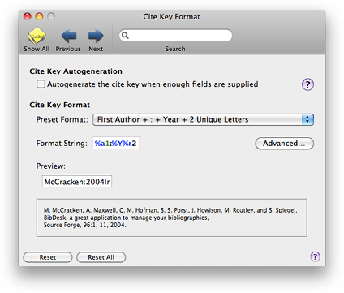
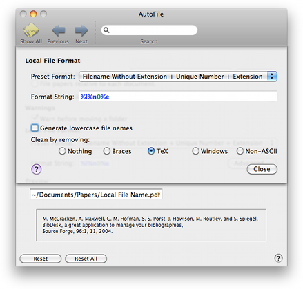

Cite Key Cite Key
Cite Key Cite KeyThe Cite Key pane lets you control the Cite Key Autogeneration feature. You can set whether you want BibDesk to automatically generate cite keys for you. You can also control how the generated keys are contructed using a format string.

Cite key Autogeneration: When you select the Autogenerate option, BibDesk will automatically generate cite keys for new items. The cite key will be build using a format string, which you can supply using the other controls. See Citation Keys for more information about cite key autogeneration.
Cite-Key Format: You can choose from several default cite key formats. Choosing "Custom" allows you to set the cite key format string to any valid format.
For a more detailed control over the cite key generation, choose the "Advanced" button. This will reveal a editing sheet with the following additional items.

Preset Format: This is a copy of the popup button in the main pane.
Format String: This text field shows the cite key format field that is used to automatically generate cite keys. The cite key format string can contain several special format specifiers, which are a %-character followed by a specifier character and optionally zero to two numbers. See Autogeneration Format Syntax for a more detailed description of the syntax.
Choose a format specifier to add: This allows you to easily add format specifiers at the end of the format string. This popup button will only be visible in custom mode.
Generate lowercase cite keys: Selecting this option will generate cite keys in all lowercase characters.
Clean by removing: You can set additional cleaning of generated parts of the parsed format string. Braces are normally used in BibTeX to protect parts of a string from capitalization. You can choose to remove those braces from the generated cite key. You can additionally choose to remove TeX commands. This will also remove the braces.